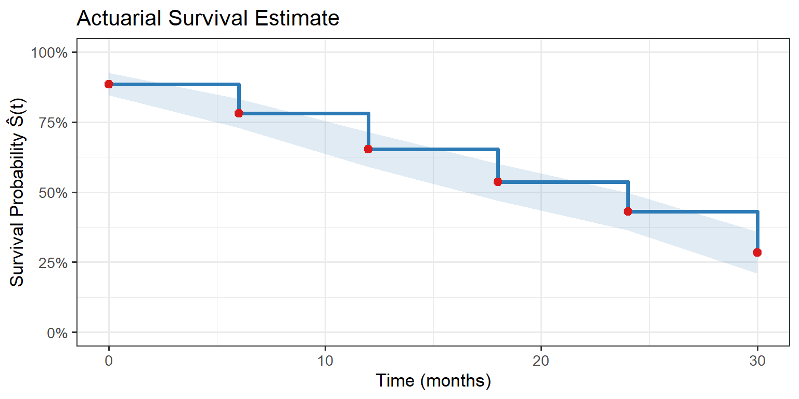

systemfonts and textshaping have been compiled with different versions of Freetype. Because of this, textshaping will not use the font cache provided by systemfonts6 Actuarial Method for Grouped Data
When survival data arrive in grouped form — counts of deaths and withdrawals in successive time intervals — the actuarial (life table) method provides a computationally straightforward non-parametric estimate of \(S(t)\). It predates the Kaplan–Meier estimator by decades and underpins traditional demographic and insurance calculations.
6.1 The Actuarial Estimator
Within each interval \([t_j, t_{j+1})\), denote:
- \(l_j\) = number entering the interval
- \(d_j\) = number dying (events) in the interval
- \(c_j\) = number censored (withdrawn) in the interval
Assuming censoring occurs at the midpoint of the interval (the standard actuarial assumption):
\[\hat{q}_j = \frac{d_j}{l_j - c_j/2}, \qquad \hat{p}_j = 1 - \hat{q}_j\]
The estimated survival function at the end of interval \(j\) is:
\[\hat{S}(t_j) = \prod_{u=1}^{j} \hat{p}_u\]
6.1.1 Variance (Greenwood-type)
\[\widehat{\text{Var}}[\hat{S}(t_j)] = [\hat{S}(t_j)]^2 \sum_{u=1}^{j} \frac{\hat{q}_u}{\hat{p}_u (l_u - c_u/2)}\]
act <- data.frame(
Interval = c("[0,6)","[6,12)","[12,18)","[18,24)","[24,30)","[30,36)"),
l_j = c(250, 210, 174, 138, 106, 78),
d_j = c(28, 24, 28, 24, 20, 16),
c_j = c(12, 12, 8, 8, 8, 62) # final interval: remaining censored
)
act <- act |>
mutate(
eff_n = l_j - c_j / 2,
q_hat = d_j / eff_n,
p_hat = 1 - q_hat,
S_hat = cumprod(p_hat),
gw_term = q_hat / (p_hat * eff_n),
var_S = S_hat^2 * cumsum(gw_term),
se_S = sqrt(var_S),
CI_lo = pmax(0, S_hat - 1.96 * se_S),
CI_hi = pmin(1, S_hat + 1.96 * se_S)
)
act |>
mutate(across(c(eff_n,q_hat,p_hat,S_hat,se_S,CI_lo,CI_hi),
\(x) round(x,3))) |>
select(Interval,l_j,d_j,c_j,eff_n,q_hat,p_hat,S_hat,se_S,CI_lo,CI_hi) |>
kbl(col.names = c("Interval","l_j","d_j","c_j","l_j - c_j/2",
"q̂_j","p̂_j","Ŝ(t)","SE","Lo 95%","Hi 95%"),
align = "c") |>
kable_styling(bootstrap_options = c("striped","condensed"),
full_width = FALSE, position = "center", font_size = 11)| Interval | l_j | d_j | c_j | l_j - c_j/2 | q̂_j | p̂_j | Ŝ(t) | SE | Lo 95% | Hi 95% |
|---|---|---|---|---|---|---|---|---|---|---|
| [0,6) | 250 | 28 | 12 | 244 | 0.115 | 0.885 | 0.885 | 0.020 | 0.845 | 0.925 |
| [6,12) | 210 | 24 | 12 | 204 | 0.118 | 0.882 | 0.781 | 0.027 | 0.728 | 0.834 |
| [12,18) | 174 | 28 | 8 | 170 | 0.165 | 0.835 | 0.652 | 0.032 | 0.591 | 0.714 |
| [18,24) | 138 | 24 | 8 | 134 | 0.179 | 0.821 | 0.536 | 0.034 | 0.469 | 0.602 |
| [24,30) | 106 | 20 | 8 | 102 | 0.196 | 0.804 | 0.431 | 0.034 | 0.363 | 0.498 |
| [30,36) | 78 | 16 | 62 | 47 | 0.340 | 0.660 | 0.284 | 0.037 | 0.211 | 0.357 |
# Midpoints for plotting
act$t_mid <- c(0,6,12,18,24,30)
ggplot(act, aes(x = t_mid, y = S_hat)) +
geom_step(colour = "#2C7BB6", linewidth = 1.3) +
geom_ribbon(aes(ymin = CI_lo, ymax = CI_hi), alpha = 0.15, fill = "#2C7BB6") +
geom_point(colour = "#D7191C", size = 2.5) +
scale_y_continuous(labels = scales::percent, limits = c(0,1)) +
labs(title = "Actuarial Survival Estimate",
x = "Time (months)", y = "Survival Probability Ŝ(t)")
6.2 Comparison: Actuarial vs Kaplan–Meier
| Feature | Actuarial | Kaplan–Meier |
|---|---|---|
| Data format | Grouped (interval counts) | Individual (exact times) |
| Censoring assumption | Midpoint of interval | Exact time known |
| When useful | Large datasets, register data | Clinical/experimental studies |
| Consistency | Yes | Yes |
Quotes to Inspire
“Facts are stubborn things, but statistics are pliable.”
— Mark Twain